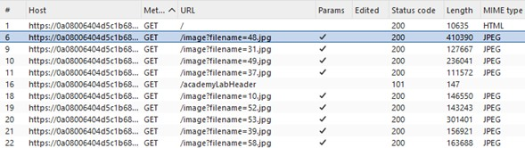
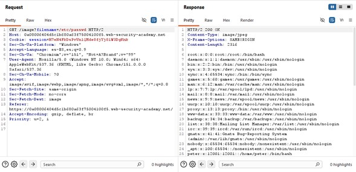
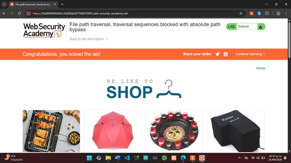

Laboratorio 02
File Path Traversal — Traversal Sequences Blocked With Absolute Path Bypass
Explotación controlada de una vulnerabilidad File Path Traversal mediante el uso de una ruta absoluta para evadir el bloqueo de secuencias de recorrido de directorios.
Objetivo
Identificar y explotar de manera controlada una vulnerabilidad
de File Path Traversal presente en la carga de imágenes de
una aplicación web. Mediante Burp Suite, se analizó y modificó una
petición HTTP para manipular el parámetro filename.
Debido a que la aplicación bloquea las secuencias convencionales
de recorrido de directorios, se utilizó una ruta absoluta
para acceder directamente al archivo /etc/passwd y comprobar
que la validación implementada podía ser evadida.
Desarrollo
El laboratorio se realizó en PortSwigger Web Security Academy
utilizando Burp Suite Community Edition. Desde el navegador
integrado de Burp Suite se accedió a la instancia del laboratorio y
se analizaron las peticiones HTTP generadas por la aplicación.
En Proxy > HTTP history se identificó que las imágenes de
los productos eran solicitadas mediante peticiones GET al
endpoint /image, utilizando el parámetro filename
para especificar el archivo que debía recuperar el servidor.
A partir de este comportamiento se seleccionó una de las peticiones
para analizar y modificar su contenido.

Análisis de la petición con Repeater
La petición seleccionada se envió al módulo Repeater,
permitiendo modificar manualmente sus parámetros y reenviarla
al servidor para observar los cambios producidos en la respuesta.
En este laboratorio, la aplicación bloqueaba las secuencias
convencionales de recorrido de directorios como ../.
Sin embargo, se identificó que todavía era posible proporcionar
directamente una ruta absoluta mediante el parámetro
filename.
Por esta razón, se sustituyó el nombre original de la imagen
por el siguiente payload:
/etc/passwd
Bypass mediante ruta absoluta
A diferencia del laboratorio anterior, en esta ocasión no fue
necesario utilizar secuencias ../ para retroceder dentro
de la estructura de directorios.
El carácter / al inicio del payload indica que la ruta
comienza desde la raíz del sistema de archivos. De esta forma,
/etc/passwd especifica directamente la ubicación del archivo
que se desea recuperar.
Esto permitió evadir la protección implementada por la aplicación:
aunque las secuencias de traversal estaban bloqueadas, no existía
una validación adecuada que impidiera utilizar rutas absolutas.

Después de enviar la petición modificada, el servidor respondió
con HTTP/2 200 OK y devolvió en el cuerpo de la respuesta
información correspondiente al archivo /etc/passwd.
La recuperación del archivo confirmó que el parámetro
filename aceptaba una ruta absoluta y que el filtro
implementado resultaba insuficiente para impedir el acceso
a archivos situados fuera del directorio autorizado.
Confirmación del laboratorio
Finalmente, PortSwigger Web Security Academy reconoció la recuperación correcta del archivo solicitado y marcó el laboratorio como Solved, confirmando que el objetivo de la práctica había sido completado satisfactoriamente.

Resultados
Se explotó exitosamente una vulnerabilidad de
File Path Traversal presente en el mecanismo de carga de
imágenes de la aplicación.
Mediante la modificación del parámetro filename con el
payload /etc/passwd, se comprobó que el bloqueo de las
secuencias de recorrido de directorios no impedía el acceso
mediante una ruta absoluta.
El servidor respondió con HTTP/2 200 OK y mostró el
contenido del archivo solicitado, demostrando que la validación
implementada era insuficiente. Finalmente, PortSwigger Web
Security Academy validó la explotación y marcó el laboratorio
como Solved.
Conclusión
El laboratorio permitió comprender que bloquear únicamente
secuencias conocidas como ../ no es suficiente para
prevenir una vulnerabilidad de File Path Traversal.
Mediante Burp Suite fue posible identificar el parámetro
filename, modificar su valor y comprobar que la aplicación
aceptaba una ruta absoluta para acceder directamente a un archivo
fuera del directorio destinado a las imágenes.
La recuperación de /etc/passwd demostró la importancia
de validar no solamente patrones específicos de recorrido, sino
también la ruta final que será procesada por el servidor,
asegurando que permanezca dentro de los directorios autorizados.
La actividad también permitió reforzar el uso de
HTTP History y Repeater para analizar, modificar
y comprobar el comportamiento de peticiones HTTP durante
pruebas controladas de seguridad web.